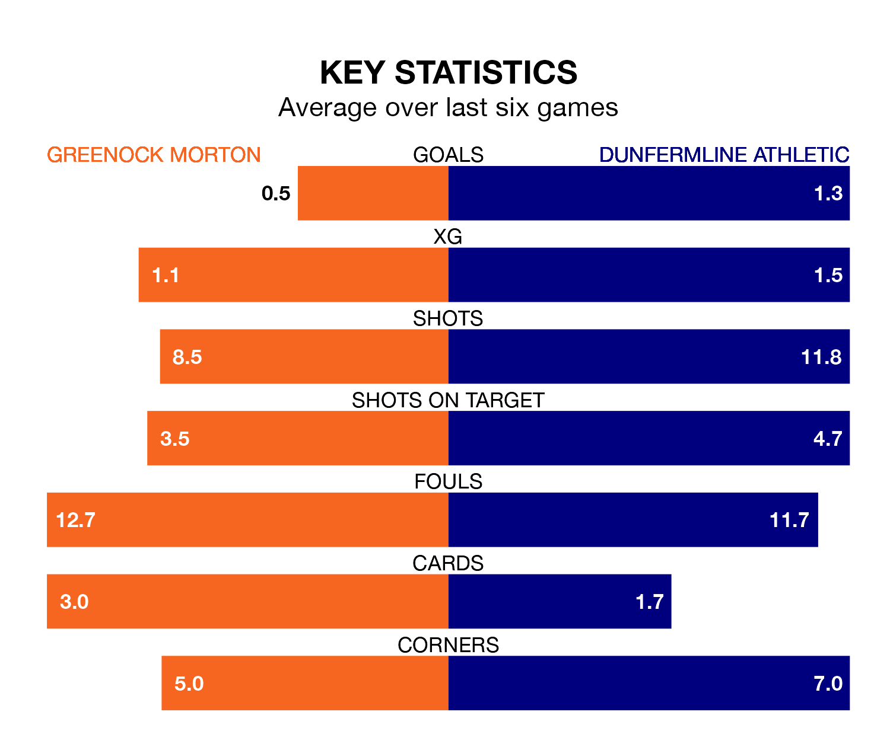

Greenock Morton welcome Dunfermline Athletic to Cappielow Park on Saturday looking to pick up points to end their three-game losing streak.
Greenock Morton's struggles have left them with five points from their last six Championship matches, while their opponents have earned 10 from a possible 18.
In the last 10 years, Greenock Morton and Dunfermline have played each other on 30 occasions. Greenock Morton won 13 of them, Dunfermline eight, and they drew nine times.
On average, the Ton scored 1.6 goals and Dunfermline 1.1 in those matches.
Their last meeting was on February 3, when Greenock Morton won 5-0 away.
In Ryan Mullen, Greenock Morton can rely on one of the league's safest pair of hands. He has kept seven clean sheets in his 15 appearances this season in the Championship.
In Dunfermline's net, Deniz Mehmet has four clean sheets in 22 games. He has conceded a goal every 72 minutes, more than twice as often as the 163 minutes between goals for Mullen.
With 33 goals in 29 games so far this season, Athletic are scoring at below the league average rate with 1.1 goals per game. But they are conceding fewer than average too, letting in 39 goals at a rate of 1.3 per game.
The Ton are also below average scorers, with 1.2 goals per game, compared to a league average of 1.4. They have also conceded 1.2 goals per game.
The hosts are fifth in the table after 28 games, of which they have won 10 and drawn seven, earning 37 points.
The away side are one place behind Greenock Morton in sixth, with nine wins and eight draws putting them on 35 points.
Greenock Morton's last match was on March 16, a 2-1 loss against Partick Thistle, with Robbie Muirhead getting the goal for the Ton.
Dunfermline beat Dundee United 3-1 last time out, on March 15, with Kane Ritchie-Hosler (two) and Matty Todd on the scoresheet.
Saturday's match will be refereed by Steven McLean, who has taken charge of five Championship games so far this season, issuing no red cards and booking 12 players. He has not awarded any penalties.
The last Greenock Morton game McLean refereed was a 0-0 away draw with Queen's Park on February 17. His last Dunfermline match was their 1-0 loss at home against Raith Rovers on August 26.
Updated: 10:19 (UTC), 22/03/24